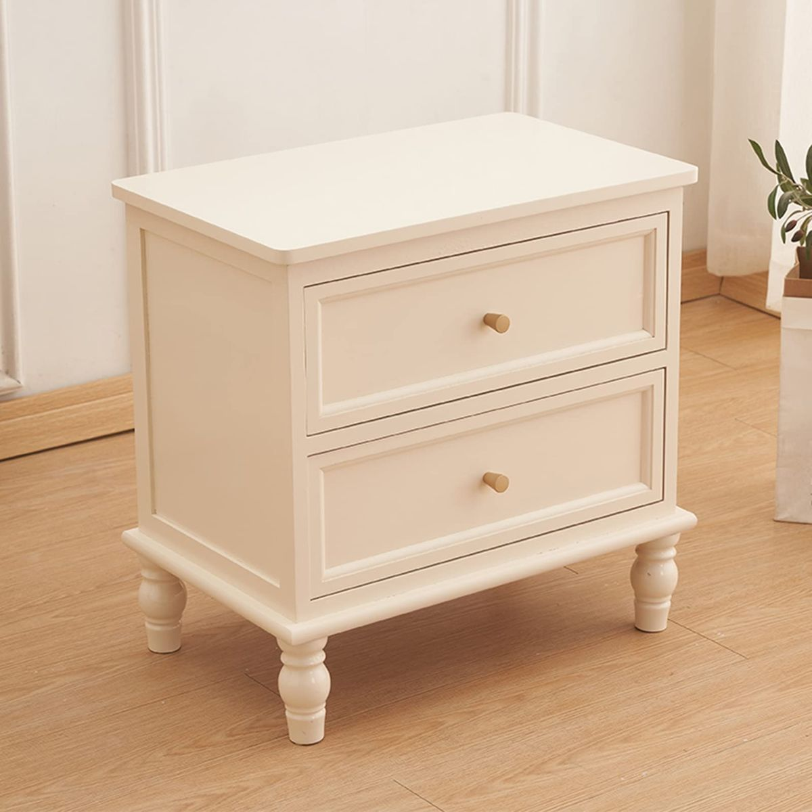

★★★★★
«Juda yam yaxshi ishlashadi. Alloh ulardan rozi bo’lsin.»
VseIzDoma eski shkaflarni qimmat sotib oladi: kupe-shkaflar, ochiladigan va burchakli shkaflar, garderob tizimlari, kiraverish mebeli va komodlar. Massiv, MDF, LDSP — har qanday brend va holat. 1 soatda chiqamiz, baholash bepul, pul darhol!
+998 99 111 23 23
Telegramga surat yuboring yoki qo'ng'iroq qiling — dastlabki narxni darhol aytamiz. Ko'rikka o'sha kuniyoq Toshkent bo'ylab chiqamiz.
Material, furnitura, ko'zgular va korpus holatiga qaraymiz. Massiv va import fabrikalarni yuqori baholaymiz — «eski-tuski» deb narxni tushirmaymiz.
Yukchilar o'z asboblari bilan keladi: eshiklarni yechadi, korpusni ajratadi va istalgan qavatdan olib chiqadi. Barchasi bizning hisobimizdan.
Kupe, ochiladigan, garderob, kitob shkaflari, o'rnatilganlari, komod va tumbalar. Nuqsonli va qismlarga ajratishga bo'lganini ham sotib olamiz.

Oynali va oynasiz shkaf-kupeler. 2 va 3 eshikli, tortmali. Ixcham va sig'imli — har qanday xona uchun.
Klassik va zamonaviy tarqoq shkaflar. 2-4 eshikli, ilgakli va javonli. Mahalliy va import — har qanday byudjetga.

To'liq garderob tizimlari yotoqxona uchun. Ochiq va yopiq bo'limlar, tortmalar, oyna. Import va mahalliy garderoblar.

Oynali kitob shkaflari, ochiq stellajlar. Mehmon xonasi va kabinet uchun. Klassik va zamonaviy uslubda.

Tortmali komodlar, TV tumbalari, yotoq tumbochalari. Ixcham va funksional — har qanday xonaga mos.

Dahliyz va mehmon xonasi uchun o'rnatilgan shkaflar. Devor bo'ylab to'liq sig'imli yechimlar. Oyna, eshik, ichki tizim bilan.
Ko'zgulari bor kupe-shkaf va burchakli shkaf ochiladiganidan yuqori baholanadi. Garderob tizimlari va 3-4 eshikli katta kupelar eng qimmat turadi.
Shkaf qanchalik katta, bo'limlar, javonlar, tortmalar va shtangalar soni qancha ko'p bo'lsa — narx shuncha yuqori. 2 metrdan katta sig'imli modellarni qimmatroq olamiz.
Yog'och massivi MDF dan, MDF esa LDSP dan qimmat. Shponlangan va bo'yalgan fasadlar narxga qo'shiladi.
Uchib ketgan joyi, tirnalgani va osilib qolgan eshiklari yo'q shkaf — to'liq narx. Nuqsonlisini yoki qismlarga ajratishga ham olamiz, lekin arzonroq.
Ishlaydigan yo'naltiruvchilar, dovodchiklar, ilgaklar va butun ko'zgular narxni oshiradi. Import furnitura (Blum, Hettich) yuqori baholanadi.
Import fabrika shkaflari — italyan, turk, malayziya — mahalliy va hunarmand yig'uvidan qimmat turadi.
Shkafni tasvirlab bering: turi, o'lchami, materiali, holati. Yoki Telegramga bir-ikki surat yuboring — narxni 15 daqiqada aytamiz.
Toshkent bo'ylab bepul chiqish, ko'p hollarda murojaat qilgan kuniyoq. Joyida ko'rib chiqamiz va yakuniy summani kelishamiz.
Yuklashdan oldin naqd yoki o'tkazma bilan to'laymiz. O'zimiz ajratamiz, olib chiqamiz va olib ketamiz — bepul.
Sotib olish narxi shkaf turiga, o'lchamiga, materialiga va holatiga bog'liq. Quyida — Toshkent bo'yicha taxminiy narx oralig'i. Aniq summani qisqacha tavsif va bir-ikki suratdan keyin 2 daqiqada aytamiz: +998 99 111 23 23.
| Shkaf turi | Tavsifi | Narxi, so'm |
|---|---|---|
| Katta kupe-shkaf | 3-4 eshik, ko'zgulari bilan | 1 000 000 – 3 500 000 |
| Ochiladigan shkaf / garderob | 2-4 eshik | 600 000 – 2 000 000 |
| Burchakli shkaf | kupe yoki ochiladigan | 700 000 – 2 200 000 |
| Komod / tumba / kiraverish mebeli | har qanday o'lcham | 200 000 – 1 000 000 |
| Nuqsonli / qismlarga ajratishga | uchgan, osilgan, furniturasiz | 100 000 dan |
Narxlar taxminiy — yakuniy summa modelga, materialga, brendga va haqiqiy holatiga bog'liq. Chiqish va baholash bepul, sizni hech narsaga majbur qilmaydi.
Shkaflar va korpusli mebelni har qanday holatda olamiz — massiv va LDSP dan, import va mahalliy. Ko'pincha quyidagilarni sotib olamiz:
Shkafni o'zingiz qismlarga ajratishingiz shart emas. Yukchilarimiz o'z asboblari bilan keladi: eshiklarni yechadi, korpusni demontaj qiladi, kvartiradan ehtiyotkorlik bilan olib chiqadi, qavatdan tushiradi va o'z transportida olib ketadi. Demontaj va olib ketish — sotib olishda bepul, hatto liftsiz yuqori qavatlarda ham.
OLX da yirik mebelni suratga olish, haftalab qo'ng'iroq kutish, savdolashish, keyin esa o'zingiz yukchi izlab, xaridor uchun shkafni qismlarga ajratish kerak. Biz narxni darhol aytamiz, 1-2 soatda chiqamiz, joyida naqd to'laymiz va o'zimiz demontaj qilib, olib ketamiz — bepul. Natijada tezroq, ko'pincha esa qo'lda sotishdan foydaliroq chiqadi.
Kupe-shkaflar, ochiladigan, burchakli, garderob tizimlari, kitob shkaflari va stellajlar, o'rnatilgan shkaflar, komodlar, tumbalar va kiraverish mebeli. Massiv, MDF va LDSP dan, import va mahalliy — har qanday brend.
Ha, va ularni oddiylaridan yuqori baholaymiz. Butun ko'zgular, ishlaydigan yo'naltiruvchilar va dovodchiklar narxni oshiradi. Blum yoki Hettich kabi import furnitura ham summaga qo'shiladi.
Har qanday holatda. Uchgan joyi va osilgan eshigi yo'q shkaf to'liq narxda ketadi, nuqsonlisi arzonroq, lekin baribir sotib olamiz. Umuman yaroqsizini ham qismlarga ajratishga olamiz va bepul olib ketamiz.
Ha. O'rnatilgan shkaflar va garderoblarni o'zimiz demontaj qilamiz — o'z asboblarimiz bilan, ehtiyotkorlik bilan, devorni shikastlamasdan. Baho fasad materialiga va ichki to'ldirish holatiga bog'liq.
Har qanday. 2 metrdan katta va 3–4 eshikli sig'imli modellarni qimmatroq sotib olamiz — ularga talab yuqori. Kichik shkaflar, komodlar va tumbalarni ham olamiz.
Ha, komplekt holida topshirish shart emas. Komodlar, tumbalar, kiraverish mebeli va stellajlarni donalab sotib olamiz. Baholashga chiqishimiz uchun bitta buyum yetarli.
Toshkent bo'ylab qo'ng'iroqdan keyin 1–2 soatda chiqamiz, ko'p hollarda o'sha kuniyoq. Haftaning 7 kuni 09:00 dan 21:00 gacha, dam olish kunlari ham ishlaymiz.
OLX da yirik mebelni suratga olish, haftalab javob kutish, savdolashish, keyin o'zingiz yukchi izlab shkafni ajratish kerak. Biz narxni darhol aytamiz, 1–2 soatda kelamiz, joyida to'laymiz va bepul olib ketamiz.
Sizga qulay bo'lganicha: joyida naqd yoki kartaga o'tkazma. Pulni yuklash va demontajdan oldin beramiz — hech qanday kechikish va «joyida savdolashish» bo'lmaydi.
Turiga, o'lchamiga, materialiga va holatiga bog'liq. Ko'zguli kupe-shkafni ochiladiganidan qimmatroq, massivni LDSP dan qimmatroq sotib olamiz. Telegramga surat yuboring — 15 daqiqada narx aytamiz.
Ha. Uchib ketgan joylari, tirnalgani, osilib qolgan eshiklari, singan yo'naltiruvchilari, ko'zgusiz — pasaytirilgan narxda sotib olamiz. Umuman yaroqsiz shkafni ham bepul olib ketamiz.
Yo'q, yukchilarimiz o'z asboblari bilan keladi: eshiklarni yechadi, korpusni demontaj qiladi, kvartiradan olib chiqadi va qavatdan tushiradi. Bularning barchasi bepul, liftsiz binolarda ham.
Butun Toshkent bo'ylab ishlaymiz: Chilonzor, Yunusobod, Mirzo Ulug'bek, Sergeli, Mirobod, Olmazor, Uchtepa, Yashnobod, Bektemir. Chirchiq, Olmaliq, Angren va Nurafshonga ham chiqamiz.
Toshkentda eski shkafni qimmat sotib olamiz — barcha tumanlar bo'ylab shkaf sotib olish. Kupe-shkaflar, ochiladigan va burchakli shkaflar, garderob tizimlari, kiraverish mebeli, komodlar va servantlar — massiv, MDF va LDSP dan, import va mahalliy. Qo'ng'iroq qiling: surat bo'yicha 15 daqiqada narx aytamiz, o'sha kuniyoq kelamiz, naqd to'laymiz va o'zimiz demontaj qilamiz.
Toshkentda eski shkafni tez sotish muammo emas: uchib ketgan joylari, tirnalgani, osilib qolgan eshiklari, ko'zgusi va furniturasi yo'q mebelni ham sotib olamiz. Holatiga qarab baholaymiz va hatto qismlarga ajratishga olamiz. Butun ko'zgular, ishlaydigan yo'naltiruvchilar va Blum yoki Hettich import furniturasi narxni oshiradi.
Shkaflarni qimmat sotib olamiz — italyan, turk va malayziya fabrikalarini mahalliy va hunarmand yig'uvidan yuqori baholaymiz. Eman, buk va yong'oq massivi MDF dan, MDF esa LDSP dan qimmat. 2 metrdan katta va 3–4 eshikli sig'imli modellarni yuqori chegara bo'yicha olamiz.
OLX da sotishdan farqli o'laroq, biz foiz olmaymiz va haftalab kutishga majbur qilmaymiz: summani darhol aytamiz, 1–2 soatda chiqamiz va o'z kuchimiz bilan bepul olib ketamiz. Butun Toshkent bo'ylab ishlaymiz — Chilonzor, Yunusobod, Mirzo Ulug'bek, Sergeli, Yashnobod, Mirobod, Olmazor, Uchtepa, Bektemir — hamda Chirchiq, Olmaliq, Angren va Nurafshonga chiqamiz.
Qo'ng'iroq qiling — surat bo'yicha 15 daqiqada narx aytamiz, o'sha kuniyoq kelamiz va joyida to'laymiz. Demontaj va olib ketish bepul!
+998 99 111 23 23«Juda yam yaxshi ishlashadi. Alloh ulardan rozi bo’lsin.»
«Yaxshi.»
«Молодцы! Всё аккуратно и оперативно.»